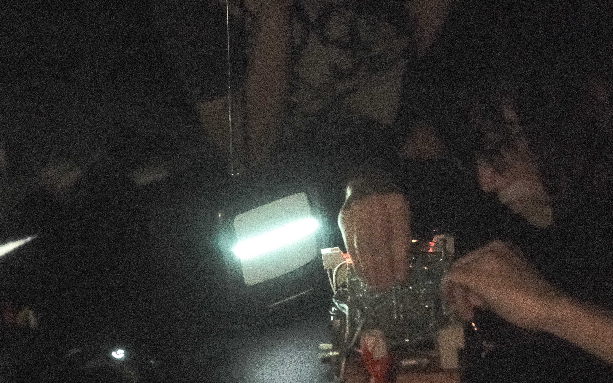
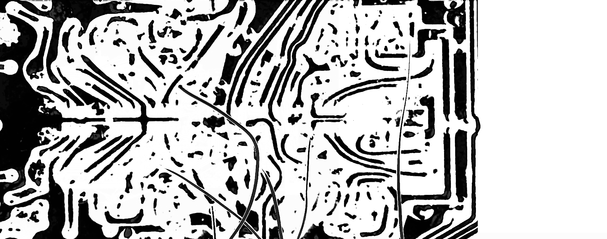
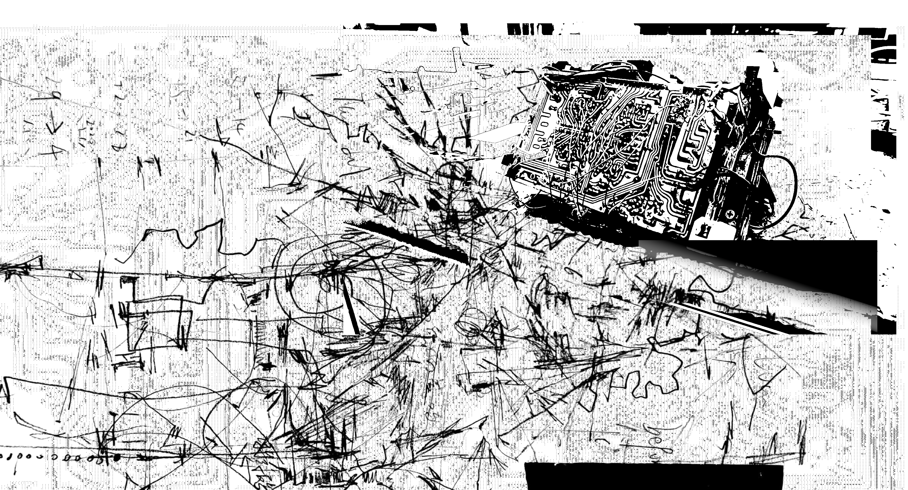
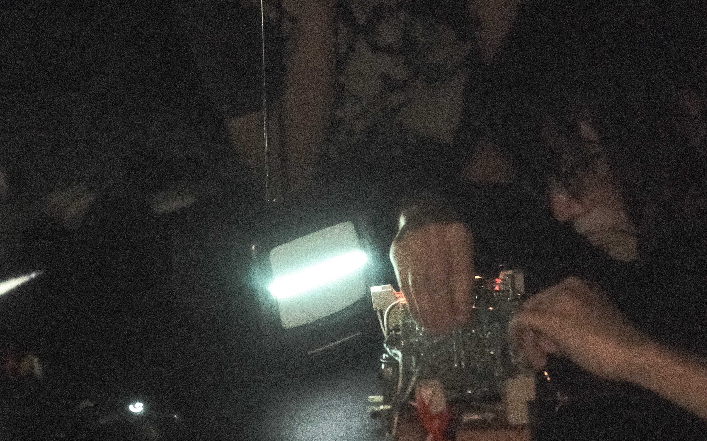
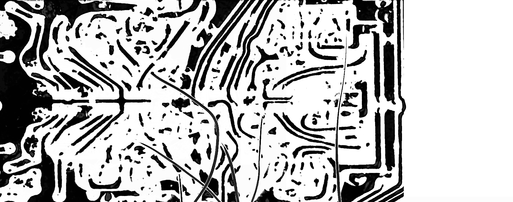
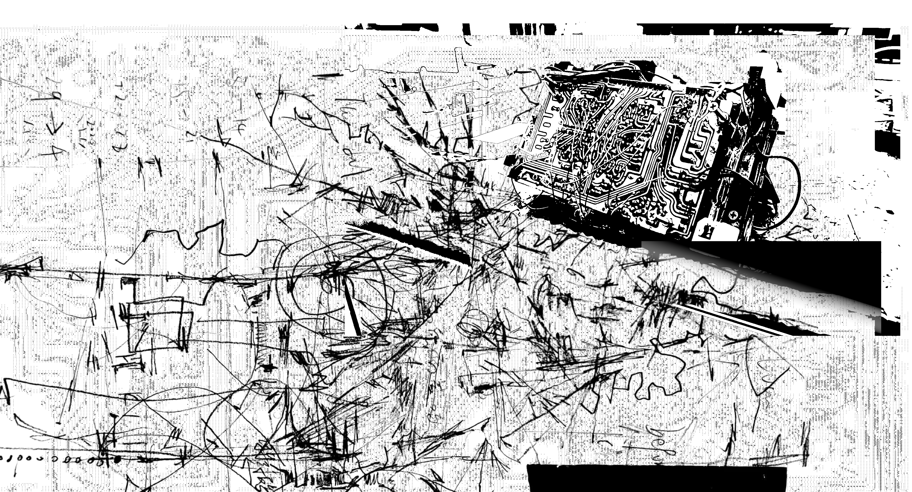
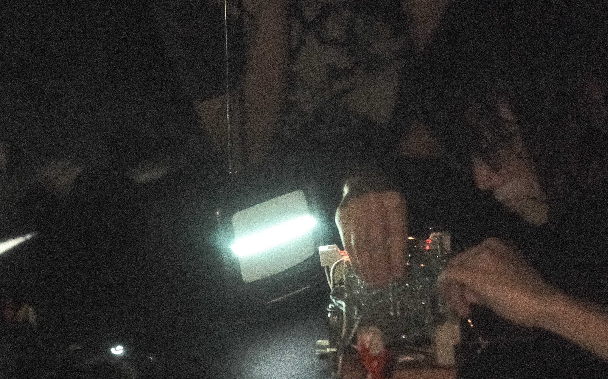
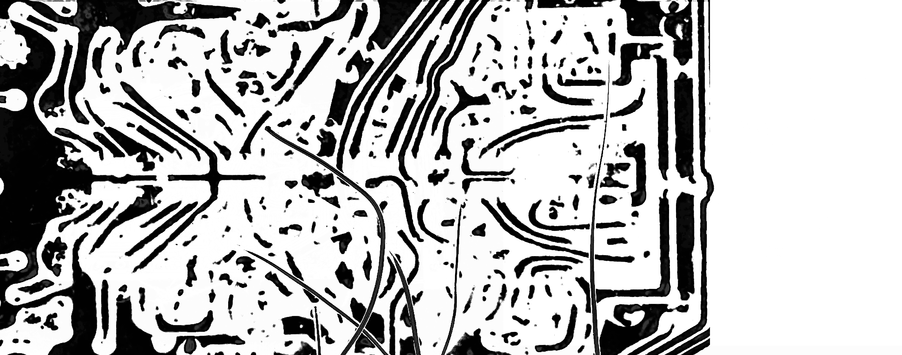
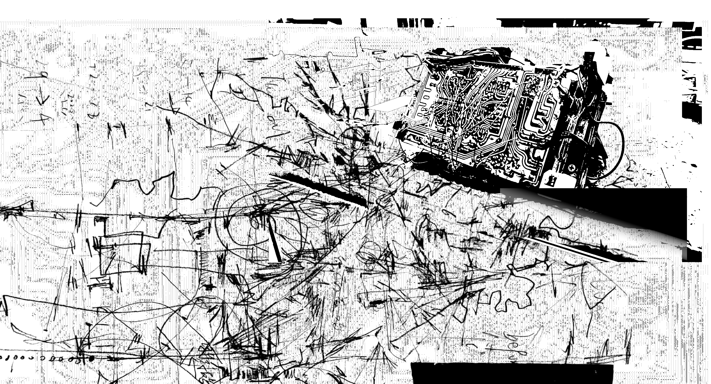

一. 离开朋友的出租屋，前年南京的一个雪夜里，随着电磁阀的释放我们推开漆皮剥落的单元门， 风雪从山和楼房的间隙中穿过。突然我们发现在山体上平时紧锁的防空洞门半开，不断的深 入山体，而两年过后我才意识到此时明长城的遗址正在头顶以相同的方向向黑暗延伸。洞体 非常僵直，只在尺度的四分之三处冒出一些你总会按照常识把他归类到客厅、工作室、卧室 的空间——实际上这并不可能再按照以上任何一种定义去工作了，洞穴内部和凝固的气温一 样安静，在折返的路上我们发现了一台磁带 Fm 收音机和干瘪的猫的尸体。我抱着收音机塑 料的外壳离开了山洞，令人感到意外的事情有很多;为什么我们在回来的路上才发现了尸体、 这条防空洞居然有一个尽头、以及当离开洞口五分钟后再次折返，一把锁便挂在了门口。
二. 不得不承认的是这是一次令人沮丧的探险，骨架般被蚀刻而出的声源通道无法工作，整座城 市一如既往的笼罩在回忆与悼念里，在一些晴朗的冬夜也许会有一座座遗产的入口被意外生 成，你得以一瞥这些甚至比三线时期还要陈旧的水泥产物。有一天你也会有机会听到他们的 声音，不论是在火药局，电波站还是哪个下关的角落，带着跨越时空的不易这些设备期待着 你的赞叹，但是那些黏腻、无处不在的灰尘却被遗传到了现在——你并不喜欢他们，这是没 办法掩盖在冷漠的表情下的。重建这种看似回绝未来的联系视网膜唯一能做的，但这总是笼 罩在一份令人悲伤的感情下。不论你以多快的速度穿过下关大马路，哪些幸存在日占时期的 建筑以及那座铁塔不会发出任何 声音，此时又是南京最差的一个季节。
三. 我拆开了那台偷来的收音机，对它的收录板进行了跳线与电路测试。已经酸化的电容会发出 冲充电不足的拖拽声，二向肋骨一样的立体声通道会通过接触点的连接发出无法预测的回授 声，即使在磁带模式下通过增加电感的方式可以获得高飘的滤波。同时乐器本身具有的 emf 功能带来了经典的放大器的递增尖叫，甚至在一定情况下能收到很粗糙的无线电波，充满了 拒绝沟通的意味。结合动态的悬挂跳线，控制着对应元件的连接。此外修改电源配置，并且 利用三极管电路完成了压控的灯管安装。
门三号在深圳完成了基本的组装（with Picha instroment)，并且在南宁与不许礼貌完成了第一次 现场表演。


